P48 解析兼容矩阵 · 实际 Vue r1
全部数据均为本地合成评审样例，不代表生产页面版本、解析结果或来源状态。
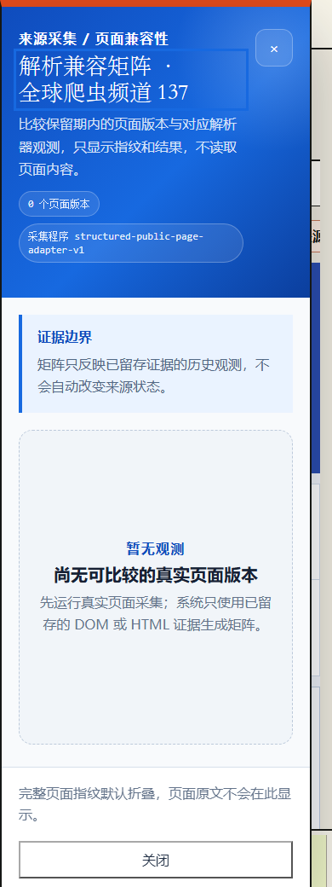
390px · loading · top
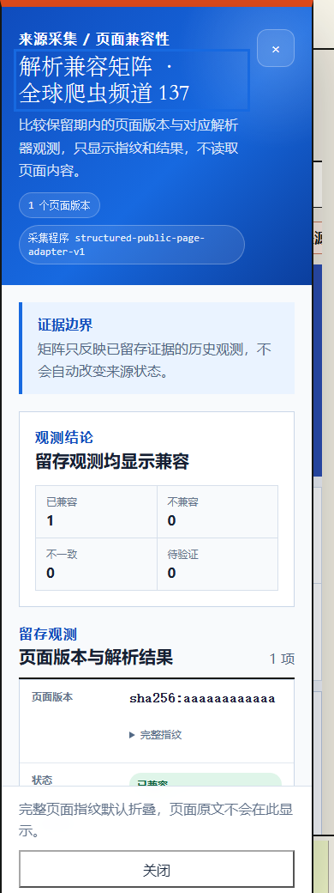
390px · compatible · top
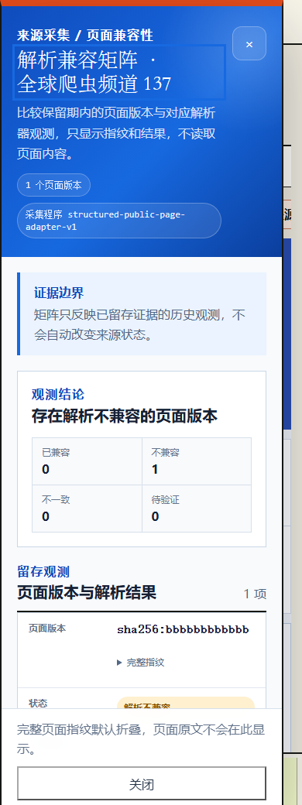
390px · incompatible · top
390px · mixed · top
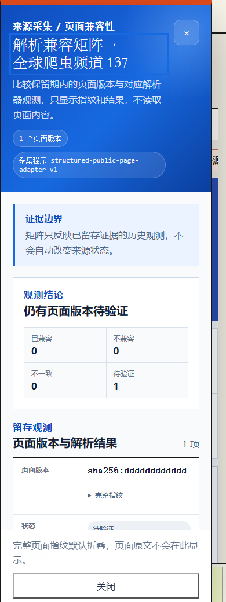
390px · unverified · top
390px · all-statuses · top
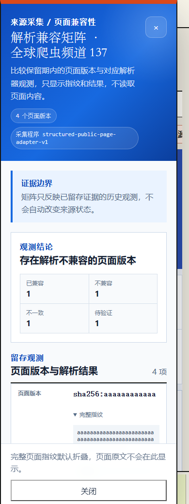
390px · all-statuses · fingerprint-detail
 390px · empty · top
390px · empty · top
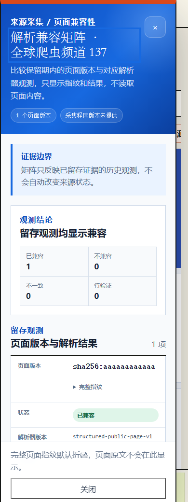
390px · adapter-version-missing · top
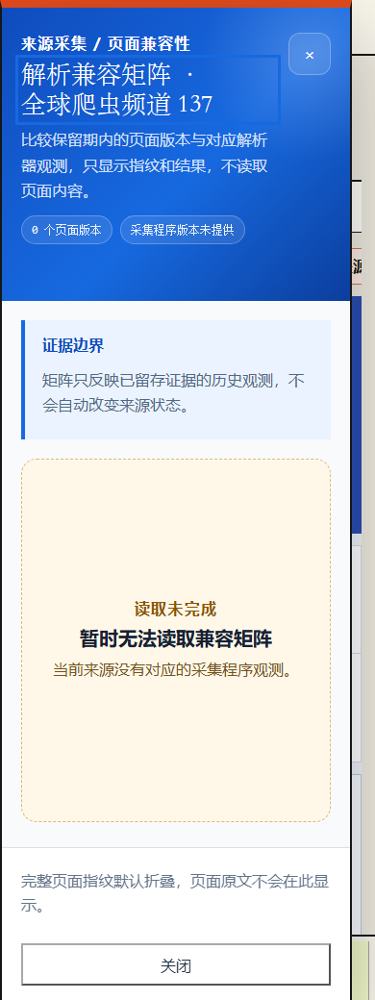
390px · summary-missing · top
390px · service-failed · top
760px · loading · top
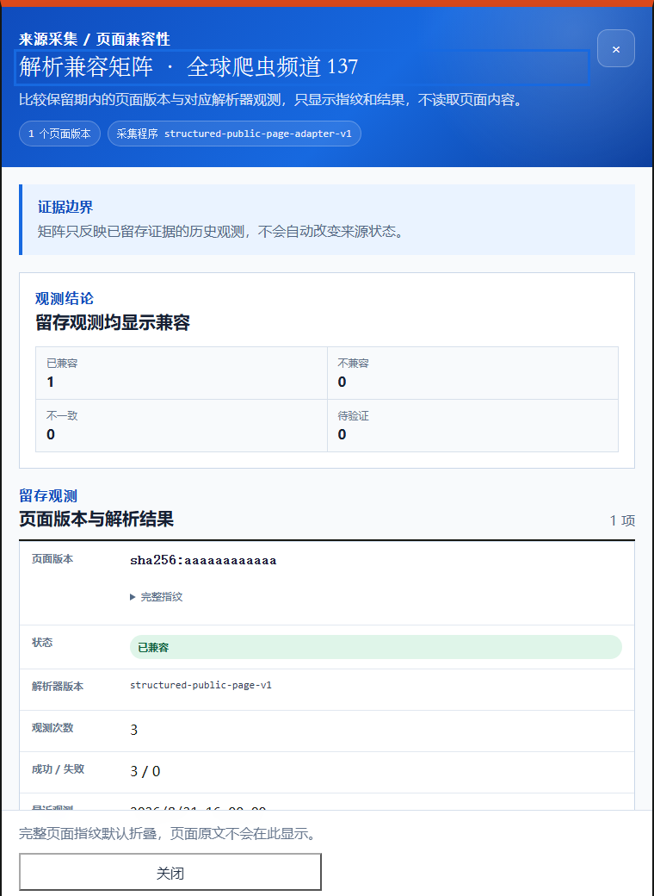
760px · compatible · top
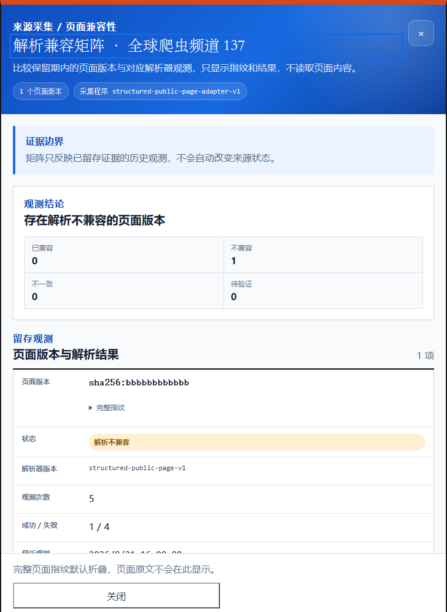
760px · incompatible · top
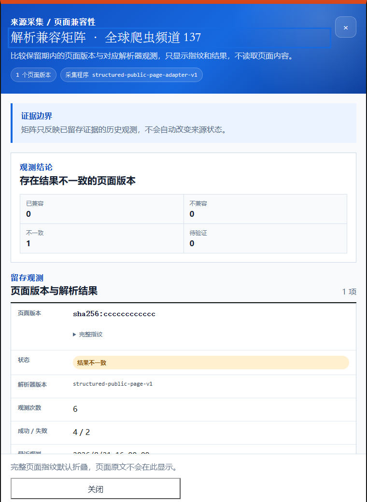
760px · mixed · top
760px · unverified · top
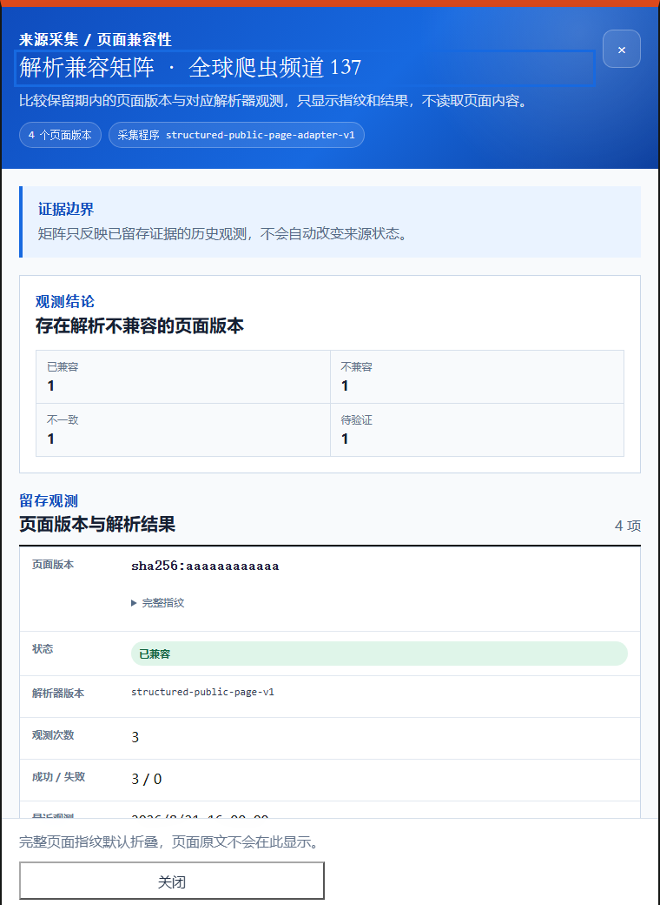
760px · all-statuses · top
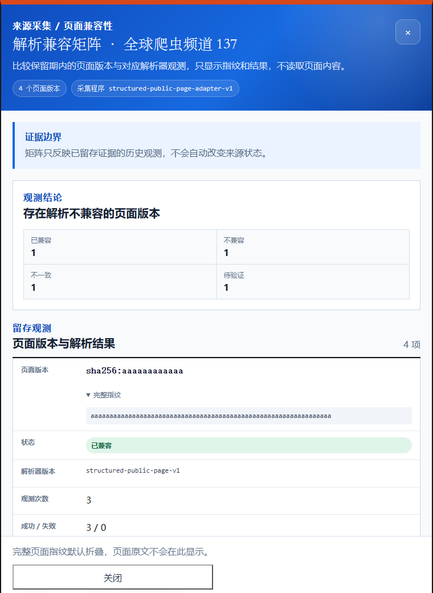
760px · all-statuses · fingerprint-detail
 760px · empty · top
760px · empty · top
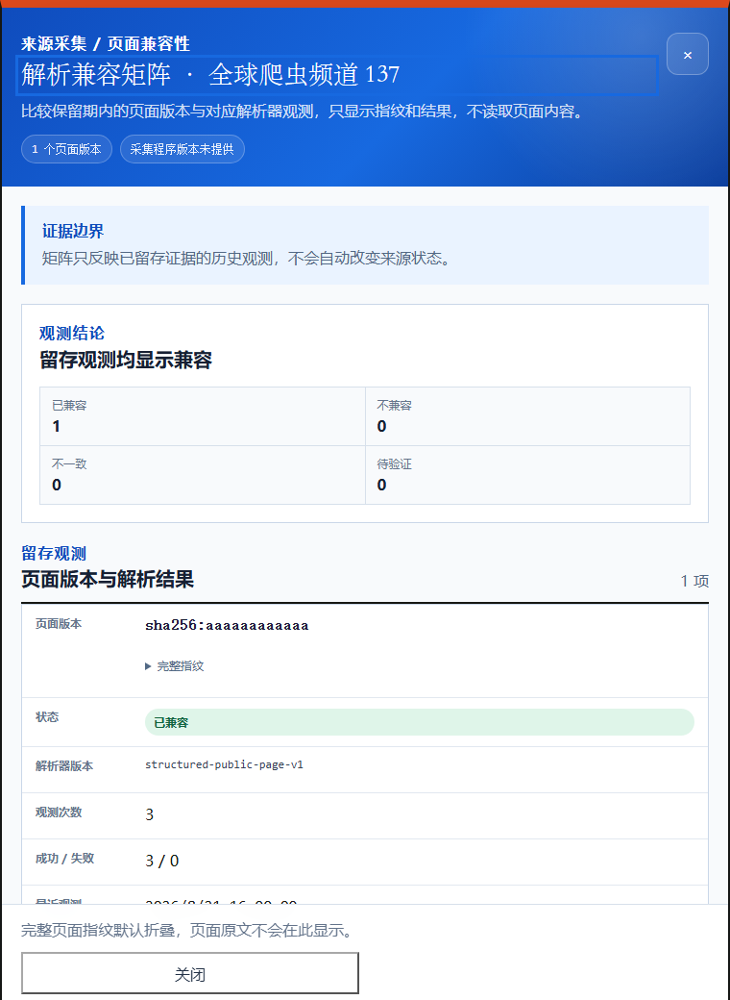
760px · adapter-version-missing · top
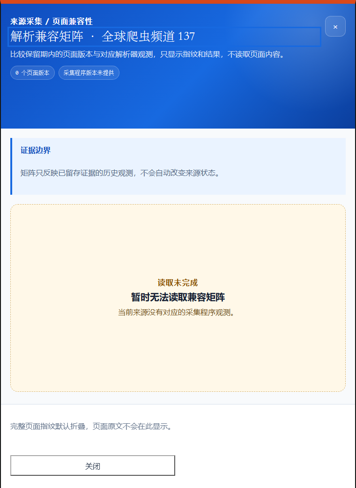
760px · summary-missing · top
760px · service-failed · top
1024px · loading · top
1024px · compatible · top
1024px · incompatible · top
1024px · mixed · top
1024px · unverified · top
1024px · all-statuses · top
 1024px · empty · top
1024px · adapter-version-missing · top
1024px · summary-missing · top
1024px · service-failed · top
1440px · loading · top
1440px · compatible · top
1440px · incompatible · top
1440px · mixed · top
1440px · unverified · top
1440px · all-statuses · top
1440px · empty · top
1440px · adapter-version-missing · top
1440px · summary-missing · top
1440px · service-failed · top
1024px · empty · top
1024px · adapter-version-missing · top
1024px · summary-missing · top
1024px · service-failed · top
1440px · loading · top
1440px · compatible · top
1440px · incompatible · top
1440px · mixed · top
1440px · unverified · top
1440px · all-statuses · top
1440px · empty · top
1440px · adapter-version-missing · top
1440px · summary-missing · top
1440px · service-failed · top